Super Mario Maker 2: Reseña
Después de casi dos semanas de lanzado el Super Mario Maker 2 y haberlo jugado día si y día también, por fin he decidido realizar una reseña acerca de este gran juego.
Como en anteriores reseñas, dividiré mi crítica en diferentes características del juego, para luego sacar un promedio de puntaje a fin de obtener el score final.
1. Menú
Con respecto a este apartado, el menú del juego es relativamente intituitivo si es que eres un jugador casual.
A la vez que esto es una ventaja, también se convierte en una desventaja cuando eres un jugador un poco más específico, ya que si deseas buscar a un creador por su nombre y nacionalidad por ejemplo, este filtro no es posible; a cambio la opción que nos ofrece el menú, es buscarlo por el id de creador, lo cual es algo más tedioso pero también más preciso.
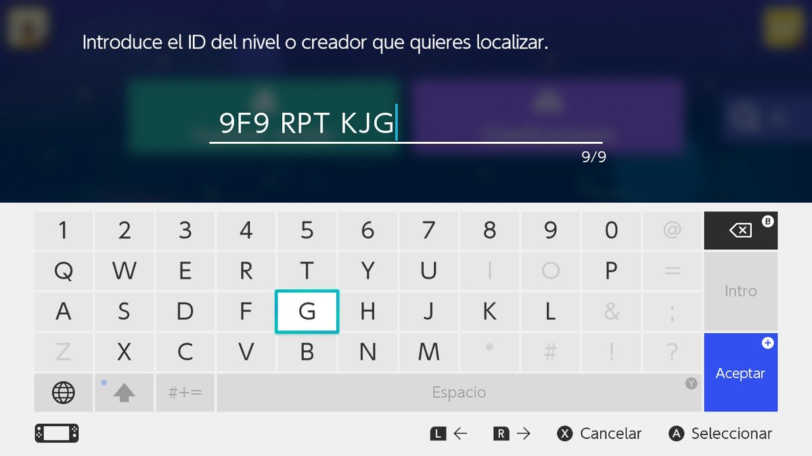
Habiendo visto lo que tiene por ofrecer el menú, que en este caso me parece un punto vital tratándose de un juego como Super Mario Maker 2, le daremos una calificación de: 8.
2. Juegos incluídos
Super Mario Maker 2, al igual que su antecesor es un juego que nos permite crear y jugar niveles con componentes de entregas anteriores de la franquicia de Super Mario.
En el caso particular de Super Mario Maker 2, tendremos acceso a los componentes de los juegos: Super Mario Bros., Super Mario Bros. 3, Super Mario World, Super Mario 3D World y Super Mario Bros. U.
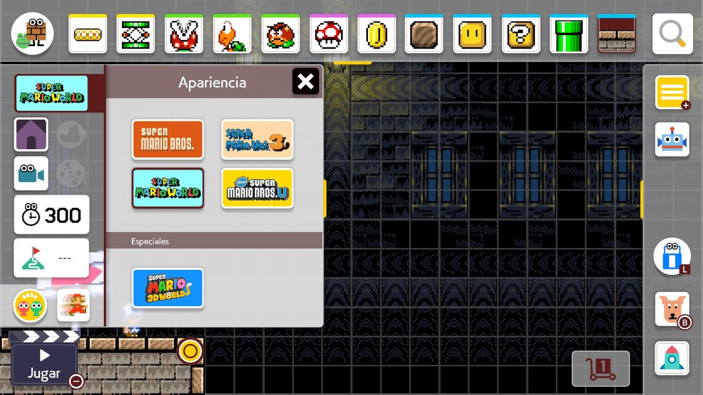
Sobre la selección de juegos no tengo nada que cuestionar, salvo algunos pocos componentes faltantes que probablemente se añadan en futuros parches.
Sin más, sobre la selección de juegos que comprende Super Mario Maker 2, la calificación que le daremos, será un: 10.
3. Personajes
El juego como tal, nos permite ocupar a cuatro personajes seleccionables, estos son: Mario, Luigi, Toad y Toadette. En este punto me atrevería a decir que se podría incluir como personaje jugable a Peach, ya que en los desafíos sin fin como dato curioso, ya no la secuestran.
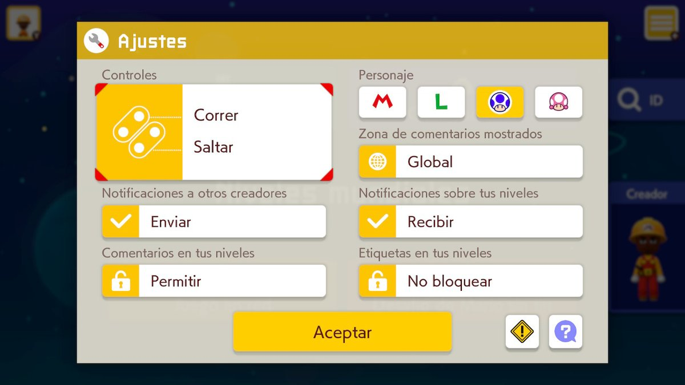
Más allá de esa pequeña observación, existe un pequeño rumor dentro de la comunidad el cual dice que tanto Toad como Toadette tienen dos frames más de suspensión en el aire que Mario y Luigi, en mapas de Super Mario 3D World y Super Mario Bros. U.
Sin mucho más que comentar sobre este apartado, la calificación que le daremos en cuanto a personajes será un: 9.
4. Modo Aventura
A diferencia de su antecesor, Super Mario Maker 2 cuenta con un modo aventura, el cuál tiene como objetivo mostrar al jugador gran parte de las mecánicas e interacciones que tienen los juegos incluídos.
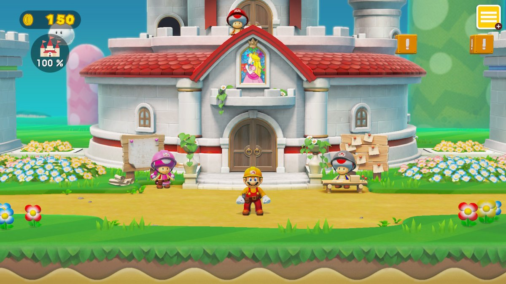
Si es bien cierto, al principio este modo no parece ser muy complicado, diría que las tareas de cuatro estrellas estarían en una calificación de nivel que sería entre normal y difícil.
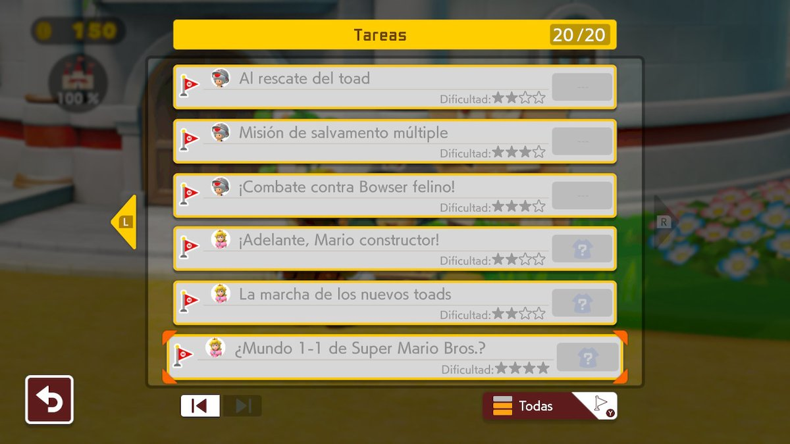 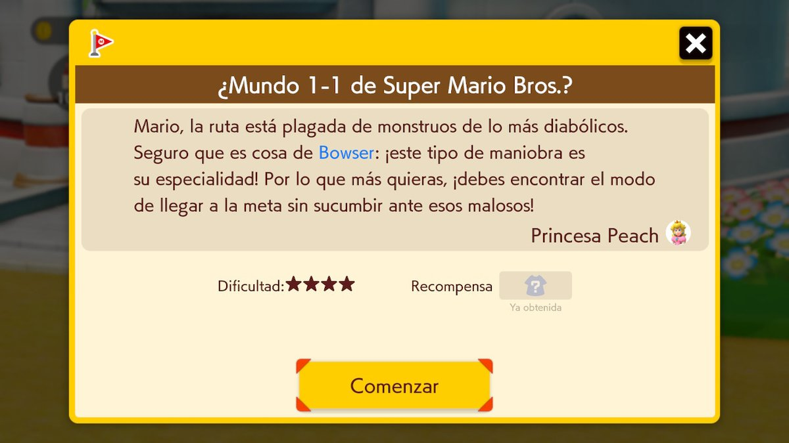
Finalmente y arriezgándome a hacer un poco de spoiler, casi al final del modo aventura conoceremos un nuevo traje de Super Mario exclusivo de esta entrega. Lo dejaré hasta aquí por ahora.
Sin más que comentar sobre el modo aventura, la calificación que le daremos será un: 9... no le doy un 10, porque se me hizo algo corto.
5. Desafíos sin fin
Sin duda alguna, para mí al menos, este es el punto más resaltante... y es que se puede jugar a este modo en las cuatro dificultades que ofrece: Fácil, Normal, Difícil y Muy Difícil, para obtener aproximadamente... una cantidad infinita de horas de juego. No les voy a mentir hasta hace poco, yo también era de los que se preguntaba si valía la pena pagar Nintendo Switch Online solo para jugar Super Smash Ultimate en línea, pero después de jugar algo así de 30 horas o más a este modo creo que puedo decir, que si es worth adquirir Nintendo Switch Online si vas a jugar solo a este modo.
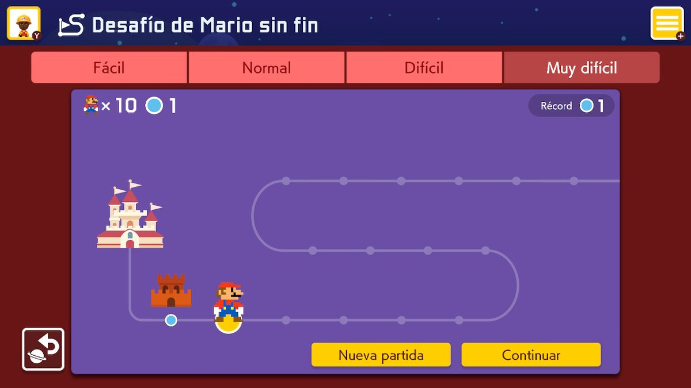
En este punto no tengo demasiado que decir, salvo que existe un desbalance de los niveles que se pueden encontrar en cada dificultad, por ejemplo el hecho de encontrar un nivel relativamente accesible, pero que por contar con una sección aburrida o algo más complicada la gente lo dropea y termina sin merecerlo en difícil o muy difícil. Además de esto niveles que están más allá de lo muy difícil, si no crees en esto te invito a buscar a Streamers y Youtubers como: Grand Poo Bear, Barbarian o Pangaea Panga, los cuales te harán ver que hay un universo distinto de niveles a los cuales se considera Kaizo, quizá Nintendo debería plantearse seriamente el incluir está categoría de dificultad.
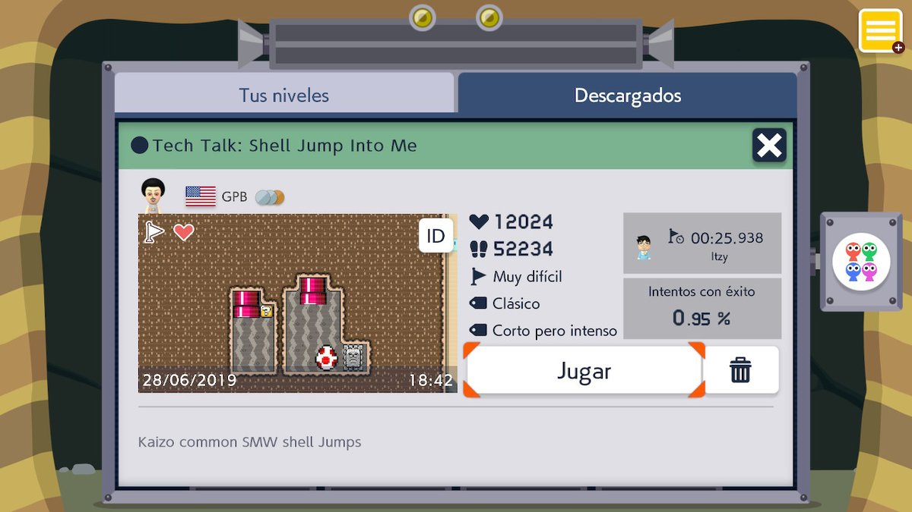 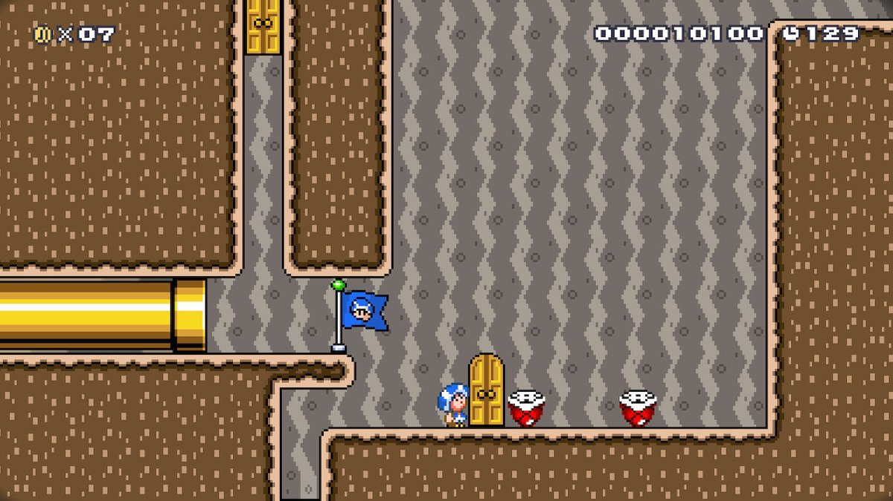
Casi lo olvido, pero debo mencionar que en cada una de las dificultades al llegar a cierta cantidad de niveles pasados, nos será otorgado un Ranking Mundial, no estoy muy seguro de si Nintendo planeará algo más con este Ranking, una probabilidad podría ser torneos o algo así.
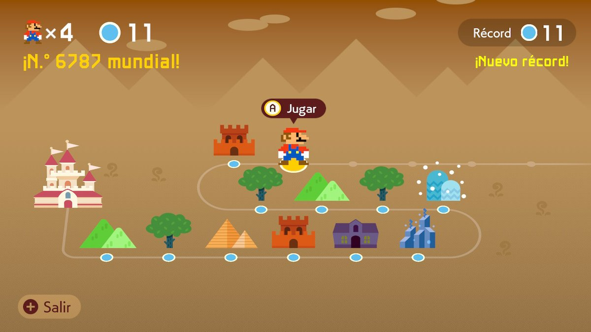
Para cerrar este punto, la calificación que le daremos a los Desafíos sin fin será un: 9.
6. Apartado visual y banda sonora
No hay mucho que comentar acerca de este punto, las bandas sonoras de los juegos de la infancia de muchos y otras más recientes que también son excelentes; acompañados de un apartado visual que ofrece en el modo TV un super estable 1080 a 60 FPS y en Portátil y Sobremesa 720 a 60 FPS.
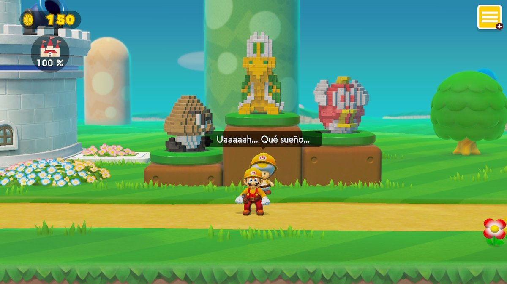
Si hay algo que tengo que reclamar, eso sería que los niveles de Super Mario World no cuentan con la mítica cornetita de cierre de nivel, he dicho.
La calificación que le daremos a este punto será de: 9 (solo por la cornetita).
7. Modo Cooperativo y Competitivo
Y así como este juego puede ser maravilloso, también puede tener su lado fatídico, en este caso nuevamente es el juego online en tiempo real de Nintendo. Pués bien, estos modos consisten en colaborar o competir en una carrera de hasta cuatro participantes de diversos rincones del mundo. Arriezgándome un poco, comentaré que me parece que Nintendo a optado nuevamente por una conexión peer to peer de hasta cuatro personas y los resultados son en su mayoría de un lag que hace injugable el nivel para las cuatro personas. La única manera de contar con una experiencia de juego buena en estos modos es que las cuatro personas cuenten con una conexión buena y estable de internet de otro modo la experiencia puede decaer hasta moverse a 5 FPS.
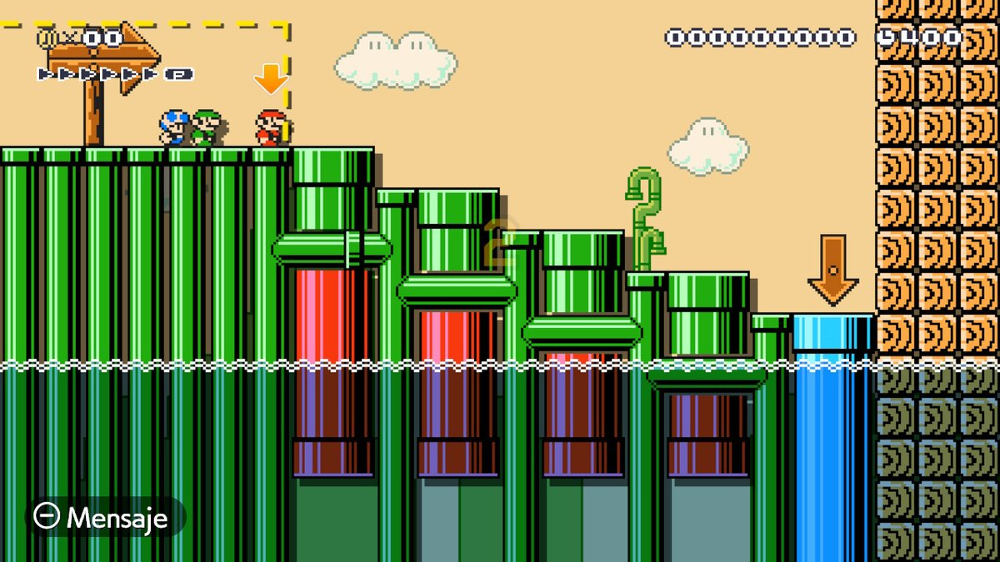
#SuperMarioMaker2 #NintendoSwitch pic.twitter.com/2n91y77suF
— Cristhian Mayuri (@mayuelcuarto) July 18, 2019
Personalmente, creo que si Nintendo de alguna manera (implementando servidores dedicados quizá), lograse optimizar esta experiencia de juego, sería muy de lejos lo mejor del juego, pero ahora mismo es lo peor (aquí me vuelvo a preguntar si vale la pena la suscripción de Nintendo Switch Online).
Sin más que agregar en este punto, la calificación que le daremos será un: 6.
8. Puntuación final
Así pues, hemos llegado a la parte final, en la que sumaremos la puntuación de todos los apartados y obtendremos el promedio.
Detalle: 8 + 10 + 9 + 9 + 9 + 6 = 51 / 6 = 8.5
Modo creador
Como un punto apartado de los que sí han recibido una calificación, debo mencionar también el modo de creador (el maker de Super Mario Maker). La razón por la que no puedo dar una calificación a este modo, es que basicamente solo este juego y su entrega anterior cuentan con algo como esto, es decir; no hay otro juego que se pueda usar como otra referencia
Habiendo aclarado lo anterior, comentaré que si eres un neófito en la creación de niveles al principio el creador puede marear un poco, pero que husmeando por aquí y allá, pronto se le agarra el hilo.
Como conclusión diré que más allá del último punto de calificación, me parece que si tienes una Nintendo Switch, Super Mario Maker 2 es un juego que no puede faltar dentro de tu colección, personalmente yo confío en que Nintendo solucionará sus problemas de Online más temprano que tarde. Espero la pasen muy bien, se despide El Mayu.